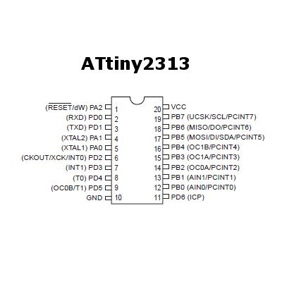
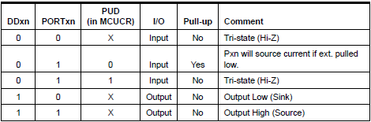

ATtiny 2313
Memo fact sheet
Projects using Attiny2313
Clapclap 2313,
Home Presence Detector,
Guitar Rod of Command, ...
Pin Layout

// ATMEL ATTINY2313(このマイコンにはA/D入力ピンはありません)
// %20-\/-%20
// RESET PA2 1| |29 VCC
// RX (D 0) PD0 2| |19 PB7 (D 16)(SCK)
// TX (D 1) PD1 3| |18 PB6 (D 15)(MISO)
// (D 2) PA1 4| |17 PB5 (D 14)(MOSI)
// (D 3) PA0 5| |16 PB4 (D 13) (PWM OC1B)
// INT0 (D 4) PD2 6| |15 PB3 (D 12) (PWM OC1A)
// INT1 (D 5) PD3 7| |14 PB2 (D 11) (PWM OC0A)
// (D 6) PD4 8| |13 PB1 (D 10) (AIN1) [Comparator-]
// (PWM OC0B)(D 7) PD5 9| |12 PB0 (D 9) (AIN0) [Comparator%20]
// GND 10| |11 PD6 (D 8)
// %20----%20
Pin configuration
Taken from Atmel Attiny 2313 pdf page 48 - Switching between input and output

Alternate development tool : WinAVR
Means, you get bored of trying to make that 2313 work with Arduino software, or you get desperate that the "blink" program once buit is 790 bytes%20 (while max is 2048)!! Ok, then you have to turn to assembler, not big deal. FYI the same program is archieved in 100 bytes%20, means roughly a factor 7 in size ... wow.
Programmer
Pololu, half the price of the official ATmel tool (1995 JPY at Switch-science.com).
Things to know:
- Doc http://www.pololu.com/catalog/product/1300
- You must have XP SP3. Installing it was not an quick task (it's veeeeeeery long) but worked fine in the end. Didn't worked with SP2, works very fine with SP3, I tried.
- You must use a single digit COM port (force it in case). Note that I didn't had problem but just followed the documentation.
- Tou must provide the micro chip with a good 5V if you don't want to brick it. A triple AA cells pack is NOT sufficient, just use your PC USB solid 5V.
- Use communication speed of 200 KHz (default setting) that's waaaaay sufficient to upload the maximum 2048 bytes of your program in the blink of an eye (or so).
- Tips for uploading code from Sparkfun tutorials http://www.sparkfun.com/commerce/tutorial_info.php?tutorials_id=142
Things to know when programming your ATtiny 2313
- If you don't use a crystal (often the case with this small chip), you use the internal 8 MHz %20/- 10% oscillator which is the factory settings, and it's cool. But by default it use factor 8 speed divider and runs at 1MHz which is not cool. So just tell the chip to be a good boy and not downscale.
//factor settings is to divide internal clock 8MHz by 8.
//don't, and just run at 8 MHz (set the clock divider to 1 so no effect)
CLKPR = (1<<CLKPCE);
CLKPR = 0; // Divide by 1
Sample codes
Timer interrupt
Pretty long example but it shows a simple PWM AND TIMER at the same time (uses the 2 timers in the end). It was
REALLY hard to find a simple example of timer interrupt on the net, the "hello world" sort of. Here I made it from info of here and there and of course the not-so-clear documentation of AVR (but when you know what you search, ok it's a good one).
Note: timer0 is 8bit and timer1 is 16bits, and when using the overflow interrupt (time it takes to become 0xFFFF) timer1 is 256 times longer than timer0 ! Obvious but hey, I had to think a little to understand it.
//
// test of timed interrupt on attiny 2313
// AlanFromJapan http://kalshagar.wikispaces.com/
//
// Inspirations :
// http://cappels.org/dproj/1_kHz_Signal_Source/1_KHz_Sine_Wave_Generator.html
// http://www.daqq.eu/index.php?show=prj_sanity_nullifier
// http://pichonjulien.blogspot.com/2009/10/pwm-avec-un-attiny2313.html
//
// includes
#include <avr/io.h>
#include <util/delay.h>
#include <avr/interrupt.h>
//use this trick to ""adjust"" the timer1 and subscale it
#define TIMER_DIVIDER 1
volatile uint16_t mTimerCounter = 0;
ISR(TIMER1_OVF_vect){
mTimerCounter%20%20;
if (mTimerCounter >= TIMER_DIVIDER){
//first thing, reset
mTimerCounter = 0;
//then do the interrupt job
//blink B1
PORTB ^= 0x02;
}
}
//inits timer 1 to do interrupt on overflow (calls ISR(TIMER1_OVF_vect))
void init_timer1_OVF() {
//timer 1 prescaler : makes clock / 64 -> tick every 1/4 sec roughly
TCCR1B=0x03;
//trigger the interrupt vector TIMER1_OVF_vect when timer 1 is overflow
TIMSK = 0x80;
//sets the interruptions to enabled
sei();
}
//Inits timer 0 to do PWM on pin B2
void init_timer0_PWM()
{
/* Set Fast PWM mode. */
TCCR0A |= (1<<WGM00) | (1<<WGM01);
/* Clear 0C0A on compare. */
TCCR0A |= (1<<COM0A1);
/* Start timer, no prescaling. */
TCCR0B |= (1<<CS00);
/* Duty cycle 0% */
OCR0A = 0;
}
//
// main function
//
void main(void) {
//factory settings is to divide internal clock 8MHz by 8.
//don't, and just run at 8 MHz (set the clock divider to 1 so no effect)
CLKPR = (1<<CLKPCE);
CLKPR = 0; // Divide by 1
//all ports of bank B goes output PB6~0 is output
DDRB = 0xFF;
//will be used to re-divide the TIMER0 (too fast)
mTimerCounter = 0;
//init for PWM
init_timer0_PWM();
//init for timer interrupt
init_timer1_OVF();
while (1){
//Blink B0 on or off
PORTB ^= 0x01;
//pulse led on B3
unsigned char i ;
for(i=0; i < 255; i%20%20) {
OCR0A = i;
_delay_ms(10);
}
for(i=255; i > 0; i--) {
OCR0A = i;
_delay_ms(10);
}
OCR0A = 0;
_delay_ms(300);
}
}
////////////////////////////////////////////////////////////
PWM with ATTiny2313
http://pichonjulien.blogspot.com/2009/10/pwm-avec-un-attiny2313.html
#include <stdlib.h>
#include <stdio.h>
#include <stdint.h>
#include <avr/io.h>
#define F_CPU 1000000UL
#include <util/delay.h>
void init_timer(){
/* Set Fast PWM mode. */
TCCR0A |= (1<<WGM00) | (1<<WGM01);
/* Clear 0C0A on compare. */
TCCR0A |= (1<<COM0A1);
/* Start timer, no prescaling. */
TCCR0B |= (1<<CS00);
/* Duty cycle 0% */
OCR0A = 0;
}
void init_led(){
DDRB |= (1<<PB2);
}
int main(int argc, char *argv[]){
int i;
init_led();
init_timer();
while(1) {
for(i=0; i < 255; i%20%20) {
OCR0A = i;
_delay_ms(10);
}
for(i=255; i > 0; i--) {
OCR0A = i;
_delay_ms(10);
}
}
return 0;
}
Basic sample : interrupt comparator hello world on attiny2313
//Minimal sample of Comparator interrupt on attiny2313
// includes
#include <avr/io.h>
#include <util/delay.h>
#include <avr/interrupt.h>
//B3 is 0x08 = b00001000
void test_blinkB3(){
PORTB ^= 0x08; //led on
_delay_ms(50);
PORTB ^= 0x08; // led off
}
//B2 is 0x04 = b00000100
void test_blinkB2(){
PORTB ^= 0x04; //led on
_delay_ms(100);
PORTB ^= 0x04; // led off
}
//Interrupt code of the comparator
// Our settings is interrupt on rising edge. Meaning no 2 consequent interrupt if stays high. It is rose when comparator output goes from 0 to 1 only.
// NB : AIN0 is POSITIVE pin, AIN1 is NEGATIVE pin
// NB2 : you need to stabilize the power rail with a capacitor (otherwise you'll have ripples and misreading). With AIN1=Comp-=0v a 200uF is fine.
ISR(ANA_COMP_vect) {
//with this test, ensure that indeed the interrupt result is 1 = V(AIN0) > V(AIN1)
//(double check ?)
if ( (ACSR & (1 << ACO)) != 0 ) {
test_blinkB2();
}
}
//
// main function
//
int main(void) {
//factory settings is to divide internal clock 8MHz by 8.
//don't, and just run at 8 MHz (set the clock divider to 1 so no effect)
CLKPR = (1<<CLKPCE);
CLKPR = 0; // Divide by 1
//port B pins 7-2 go output, 1-0 go input(it's the comparator)
DDRB = 0xFC;
//needed it seems.
//One need also a pulldown on the AIN0 (Comparator%20) to avoid having it floating (if you use a switch for instance)
PORTB &= ~(1<<PB0); // no Pull-up on PB0
ACSR |= (1<<ACI); // clear Analog Comparator interrupt
ACSR |=
(0<<ACD) | // Comparator ON
(0<<ACBG) | // Disconnect 1.23V reference from AIN0 (use AIN0 and AIN1 pins)
(1<<ACIE) | // Comparator Interrupt enabled
(0<<ACIC) | // input capture disabled
(1<<ACIS1) | // set interrupt bit on rising edge
(1<<ACIS0); // (ACIS1 and ACIS0 == 11)
sei(); // enable global interrupts
while (1) {/*all the job is done in the interrupt */
// a little "is alive" debug trick that blink another led every second or so
test_blinkB3(); _delay_ms(1000);
}
}
I2C TWI
As a master
Used in the Guitar Rod of Command project.
Holy Graal
http://www.instructables.com/id/I2C_Bus_for_ATtiny_and_ATmega/
Note the following :
- ATtiny2313 use USI not pure internal TWI, so can't wake on TWI interrupt
- ATtiny2313 must then use the USI_I2C library which works just fine out of the box
As a slave
Used in the Laser cutter project as the LCD controller.
Things to know :
- you can skip the external pullups if you use Attiny's internals
- don't forget to call sei(); after initializing the USI client ! (did cost me 4 hours that one stupid miss)
Infrared
http://openlgtv.org.ru/wiki/index.php/Using_a_generic_microcontroller_board_as_an_LG_service_remote
With Arduino IDE
- Use with ARDUINO IDE (drop it, compiler is not optimized enough, should use WinAVR)
Core
Here
http://hci.rwth-aachen.de/tiki-download_wiki_attachment.php?attId=769&page=luminet
Boards.txt
Append following text:
##############################################################
attiny2313.name=My Arduino w/ ATTINY2313
attiny2313.upload.protocol=hidspx,-d1
attiny2313.upload.maximum_size=2048
attiny2313.upload.speed=19200
attiny2313.bootloader.low_fuses=0xe4
attiny2313.bootloader.high_fuses=0x9d
attiny2313.bootloader.extended_fuses=0xff
attiny2313.bootloader.path=attiny2313
attiny2313.bootloader.unlock_bits=0xFF
attiny2313.bootloader.lock_bits=0xCF
attiny2313.build.mcu=attiny2313
attiny2313.build.f_cpu=8000000L
attiny2313.build.core=attiny2313